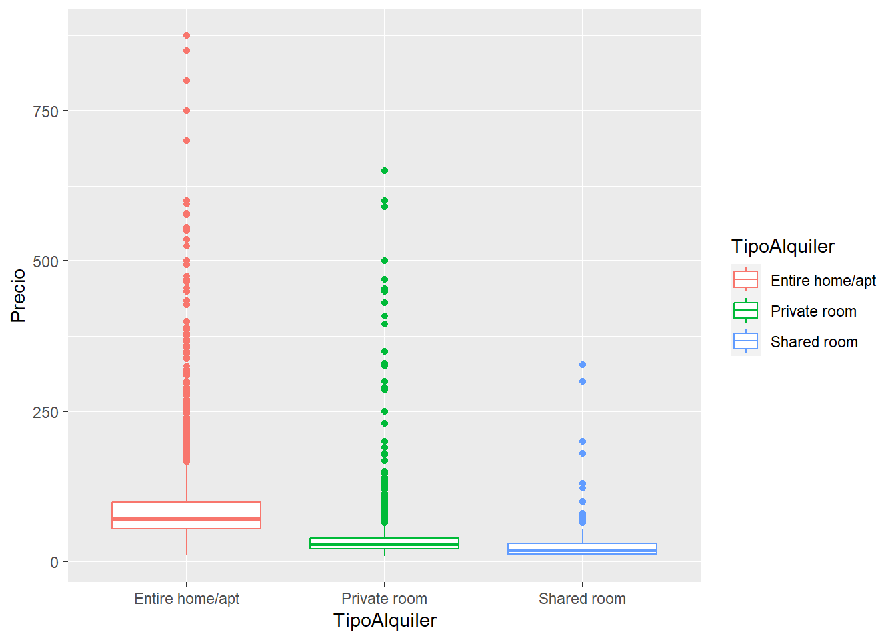
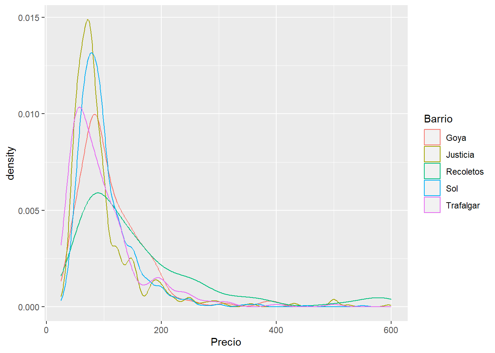
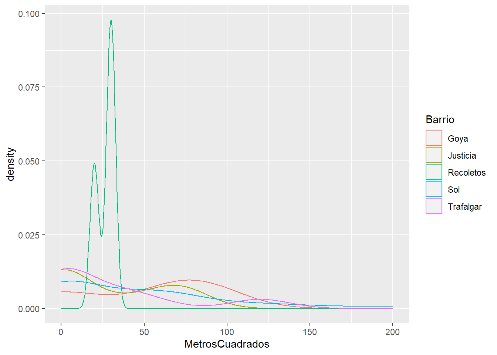
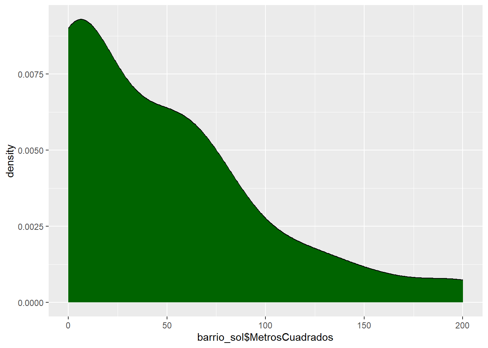
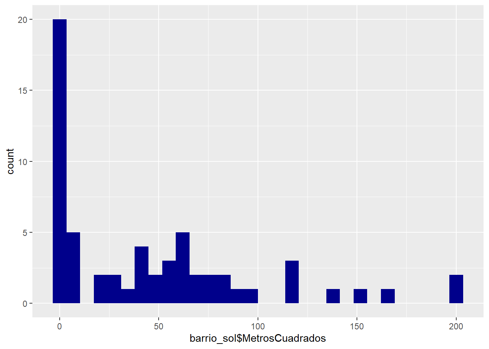

library(ggplot2)
library(dplyr)
Attaching package: 'dplyr'The following objects are masked from 'package:stats':
filter, lagThe following objects are masked from 'package:base':
intersect, setdiff, setequal, unionlibrary(ggplot2)
library(dplyr)
Attaching package: 'dplyr'The following objects are masked from 'package:stats':
filter, lagThe following objects are masked from 'package:base':
intersect, setdiff, setequal, unionCargar los datos en un dataframe llamado: airbnb
airbnb<-read.csv('data//airbnb.csv',sep = ',', stringsAsFactors = T)Mostrar las primeras 6 filas del dataframe
head(airbnb) Zipcode Neighbourhood.Cleansed Property.Type Room.Type Accommodates
1 28004 Universidad Apartment Private room 2
2 28004 Universidad Apartment Entire home/apt 6
3 28004 Universidad Apartment Entire home/apt 3
4 28004 Universidad Loft Entire home/apt 3
5 28015 Universidad Apartment Entire home/apt 5
6 28004 Universidad Apartment Entire home/apt 2
Bathrooms Bedrooms Beds Bed.Type
1 2 1 1 Real Bed
2 1 3 5 Real Bed
3 1 2 2 Real Bed
4 2 1 1 Real Bed
5 1 1 1 Real Bed
6 1 0 1 Real Bed
Amenities
1 TV,Wireless Internet,Kitchen,Pets allowed,Pets live on this property,Buzzer/wireless intercom,Heating,Suitable for events,Washer,First aid kit,Essentials,Lock on bedroom door,Iron
2 TV,Internet,Wireless Internet,Air conditioning,Kitchen,Indoor fireplace,Heating,Family/kid friendly,Washer,Dryer,Smoke detector,Carbon monoxide detector,Essentials,Shampoo
3 TV,Internet,Wireless Internet,Air conditioning,Kitchen,Doorman,Heating,Family/kid friendly,Washer,Essentials,Shampoo,Hangers,Hair dryer,Iron,Laptop friendly workspace
4 TV,Internet,Wireless Internet,Air conditioning,Kitchen,Pets allowed,Breakfast,Elevator in building,Indoor fireplace,Buzzer/wireless intercom,Heating,Washer,Essentials,Shampoo,Hangers,Hair dryer,Iron,Laptop friendly workspace,translation missing: en.hosting_amenity_49,translation missing: en.hosting_amenity_50
5 TV,Wireless Internet,Air conditioning,Kitchen,Smoking allowed,Pets allowed,Elevator in building,Heating,Family/kid friendly,Washer,Essentials,Iron
6 TV,Cable TV,Internet,Wireless Internet,Air conditioning,Wheelchair accessible,Kitchen,Doorman,Elevator in building,Buzzer/wireless intercom,Heating,Washer,Smoke detector,Carbon monoxide detector,First aid kit,Safety card,Fire extinguisher,Essentials,Shampoo,24-hour check-in,Hangers,Hair dryer,Iron,Laptop friendly workspace,Self Check-In,Doorman Entry
Square.Feet Price Review.Scores.Rating
1 NA 35 NA
2 NA 92 96
3 NA 55 91
4 NA 60 100
5 538 75 90
6 NA 55 95Renombrar las columnas de la siguiente forma:
| Nombre original | Nuevo nombre |
|---|---|
| Zipcode | CodigoPostal |
| Neighbourhood.Cleansed | Barrio |
| Property.Type | TipoPropiedad |
| Room.Type | TipoAlquiler |
| Accommodates | MaxOcupantes |
| Bathrooms | NumBanyos |
| Bedrooms | NumDormitorios |
| Beds | NumCamas |
| Bed.Type | TipoCama |
| Amenities | Comodidades |
| Square.Feet | PiesCuadrados |
| Price | Precio |
| Review.Scores.Rating | Puntuacion |
colnames(airbnb) [1] "Zipcode" "Neighbourhood.Cleansed" "Property.Type"
[4] "Room.Type" "Accommodates" "Bathrooms"
[7] "Bedrooms" "Beds" "Bed.Type"
[10] "Amenities" "Square.Feet" "Price"
[13] "Review.Scores.Rating" colnames(airbnb) <- c("CodigoPostal","Barrio","TipoPropiedad","TipoAlquiler","MaxOcupantes","NumBanyos",
"NumDormitorios","NumCamas","TipoCama","Comodidades","PiesCuadrados","Precio","Puntuacion")
head(airbnb) CodigoPostal Barrio TipoPropiedad TipoAlquiler MaxOcupantes NumBanyos
1 28004 Universidad Apartment Private room 2 2
2 28004 Universidad Apartment Entire home/apt 6 1
3 28004 Universidad Apartment Entire home/apt 3 1
4 28004 Universidad Loft Entire home/apt 3 2
5 28015 Universidad Apartment Entire home/apt 5 1
6 28004 Universidad Apartment Entire home/apt 2 1
NumDormitorios NumCamas TipoCama
1 1 1 Real Bed
2 3 5 Real Bed
3 2 2 Real Bed
4 1 1 Real Bed
5 1 1 Real Bed
6 0 1 Real Bed
Comodidades
1 TV,Wireless Internet,Kitchen,Pets allowed,Pets live on this property,Buzzer/wireless intercom,Heating,Suitable for events,Washer,First aid kit,Essentials,Lock on bedroom door,Iron
2 TV,Internet,Wireless Internet,Air conditioning,Kitchen,Indoor fireplace,Heating,Family/kid friendly,Washer,Dryer,Smoke detector,Carbon monoxide detector,Essentials,Shampoo
3 TV,Internet,Wireless Internet,Air conditioning,Kitchen,Doorman,Heating,Family/kid friendly,Washer,Essentials,Shampoo,Hangers,Hair dryer,Iron,Laptop friendly workspace
4 TV,Internet,Wireless Internet,Air conditioning,Kitchen,Pets allowed,Breakfast,Elevator in building,Indoor fireplace,Buzzer/wireless intercom,Heating,Washer,Essentials,Shampoo,Hangers,Hair dryer,Iron,Laptop friendly workspace,translation missing: en.hosting_amenity_49,translation missing: en.hosting_amenity_50
5 TV,Wireless Internet,Air conditioning,Kitchen,Smoking allowed,Pets allowed,Elevator in building,Heating,Family/kid friendly,Washer,Essentials,Iron
6 TV,Cable TV,Internet,Wireless Internet,Air conditioning,Wheelchair accessible,Kitchen,Doorman,Elevator in building,Buzzer/wireless intercom,Heating,Washer,Smoke detector,Carbon monoxide detector,First aid kit,Safety card,Fire extinguisher,Essentials,Shampoo,24-hour check-in,Hangers,Hair dryer,Iron,Laptop friendly workspace,Self Check-In,Doorman Entry
PiesCuadrados Precio Puntuacion
1 NA 35 NA
2 NA 92 96
3 NA 55 91
4 NA 60 100
5 538 75 90
6 NA 55 95#newnames<-c("CodigoPostal","Barrio","TipoPropiedad","TipoAlquiler","MaxOcupantes","NumBanyos",
#"NumDormitorios","NumCamas","TipoCama","Comodidades","PiesCuadrados","Precio","Puntuacion")Crea una nueva columna llamada MetrosCuadrados a partir de la columna PiesCuadrados.
Ayuda: 1 pie cuadrado son 0,092903 metros cuadrados
airbnb["MetrosCuadrados"] <- airbnb$PiesCuadrados * 0.092903
head(airbnb$PiesCuadrados)[1] NA NA NA NA 538 NAMiremos el código postal. Es una variable con entradas erroneas. Hay valores como ’‘,’-’ y ‘28’ que deberían ser considerados como NA. Así mismo también debería ser NA todos los que no comiencen por 28, ya que estamos con códigos postales de Madrid
El código postal 28002, 28004 y 28051 tienen entradas repetidas. Por ejemplo las entradas 28002 deberían ir dentro de 28002
El codigo 2804 debería ser 28004, 2805 deberia ser 28005 y 2815 junto con 2815 debería ser 28015
Limpia los datos de la columna Codigo Postal
airbnb[which(airbnb$CodigoPostal == ","),"CodigoPostal"] <- NA
airbnb[which(airbnb$CodigoPostal == "-"),"CodigoPostal"] <- NA
airbnb[which(airbnb$CodigoPostal == "28"),"CodigoPostal"] <- NA
airbnb[which(airbnb$CodigoPostal == ""),"CodigoPostal"] <- NAairbnb[which(airbnb$CodigoPostal == "28002\n28002"),"CodigoPostal"] <- "28002"
airbnb[which(airbnb$CodigoPostal == "28051\n28051"), "CodigoPostal"] <-"28051"
airbnb[which(airbnb$CodigoPostal == "Madrid 28004"), "CodigoPostal"] <- "28004"airbnb[which(airbnb$CodigoPostal == "2804"),"CodigoPostal"] <- "28004"
airbnb[which(airbnb$CodigoPostal == "2805"),"CodigoPostal"] <- "28005"
airbnb[which(airbnb$CodigoPostal == "2815"),"CodigoPostal"] <- "28015"
airbnb[which(airbnb$CodigoPostal == "2015"),"CodigoPostal"] <- "28015"
airbnb[which(airbnb$CodigoPostal == "280013"), "CodigoPostal"] <- "28013"Una vez limpios los datos ¿Cuales son los códigos postales que tenemos?
# La columna CodigoPostal estaba como de tipo factor, primero tenemos que quitar los valores "levels" vacíos
airbnb$CodigoPostal <- droplevels(airbnb$CodigoPostal)
table(airbnb$CodigoPostal)
20013 20126 25008 27004 27013 28001 28002 28003 28004 28005 28006 28007 28008
1 1 1 1 1 231 171 185 1796 1195 218 206 338
28009 28010 28011 28012 28013 28014 28015 28016 28017 28018 28019 28020 28021
216 384 250 2060 1020 630 602 76 107 43 200 192 58
28022 28023 28024 28025 28026 28027 28028 28029 28030 28031 28032 28033 28034
30 23 44 123 93 122 263 110 73 27 33 89 45
28035 28036 28037 28038 28039 28040 28041 28042 28043 28044 28045 28046 28047
59 67 65 77 160 16 63 90 103 19 495 32 67
28048 28049 28050 28051 28052 28053 28054 28055 28056 28058 28060 28094 28105
1 3 58 17 1 85 12 12 1 1 1 1 1
28850
1 levels(airbnb$CodigoPostal) [1] "20013" "20126" "25008" "27004" "27013" "28001" "28002" "28003" "28004"
[10] "28005" "28006" "28007" "28008" "28009" "28010" "28011" "28012" "28013"
[19] "28014" "28015" "28016" "28017" "28018" "28019" "28020" "28021" "28022"
[28] "28023" "28024" "28025" "28026" "28027" "28028" "28029" "28030" "28031"
[37] "28032" "28033" "28034" "28035" "28036" "28037" "28038" "28039" "28040"
[46] "28041" "28042" "28043" "28044" "28045" "28046" "28047" "28048" "28049"
[55] "28050" "28051" "28052" "28053" "28054" "28055" "28056" "28058" "28060"
[64] "28094" "28105" "28850"¿Cuales son los 5 códigos postales con más entradas? ¿Y con menos? ¿Cuantas entradas tienen?
Los 5 Códigos Postales con más entradas son:
head(sort(table(airbnb$CodigoPostal),decreasing = TRUE),5)
28012 28004 28005 28013 28014
2060 1796 1195 1020 630 Los 5 Códigos Postales con menos entradas son:
head(sort(table(airbnb$CodigoPostal)),5)
20013 20126 25008 27004 27013
1 1 1 1 1 ¿Cuales son los barrios que hay en el código postal 28012?
airbnb_28012 <- airbnb[which(airbnb$CodigoPostal == '28012'),]
airbnb_28012 <- airbnb_28012[,c("CodigoPostal", "Barrio")]Los barrios con CP: 28012 son Embajadores, Sol, Cortes, Palos de Moguer, Palacio y Acacias
¿Cuantas entradas hay en cada uno de esos barrios para el codigo postal 28012?
summary(airbnb_28012) CodigoPostal Barrio
28012 :2060 Embajadores :1449
20013 : 0 Sol : 301
20126 : 0 Cortes : 216
25008 : 0 Palos de Moguer: 46
27004 : 0 Palacio : 27
27013 : 0 Acacias : 13
(Other): 0 (Other) : 8 Embajadores: 1449; Sol: 301; Cortes: 216; Palos de Moguer: 46; Palacio: 27 y Acacias: 13
¿Cuantos barrios hay en todo el dataset airbnb? ¿Cuales son?
table(airbnb$Barrio)
Abrantes Acacias
18 145
Adelfas Aeropuerto
51 6
Aguilas Alameda de Osuna
15 24
Almagro Almenara
155 62
Almendrales Aluche
45 45
Ambroz Amposta
12 5
Apostol Santiago Arapiles
15 182
Aravaca Arcos
16 18
Argüelles Atocha
264 18
Bellas Vistas Berruguete
79 67
Buenavista Butarque
22 6
Campamento Canillas
22 42
Canillejas Cármenes
7 30
Casa de Campo Casco Histórico de Barajas
75 28
Casco Histórico de Vallecas Casco Histórico de Vicálvaro
40 20
Castellana Castilla
97 26
Castillejos Chopera
81 112
Ciudad Jardín Ciudad Universitaria
55 34
Colina Comillas
16 59
Concepción Corralejos
46 5
Cortes Costillares
750 32
Cuatro Caminos Cuatro Vientos
120 3
Delicias El Goloso
126 3
El Plantío El Viso
3 45
Embajadores Entrevías
1844 13
Estrella Fontarrón
28 24
Fuente del Berro Fuentelareina
68 3
Gaztambide Goya
142 229
Guindalera Hellín
187 5
Hispanoamérica Ibiza
72 105
Imperial Jerónimos
89 90
Justicia La Paz
785 16
Legazpi Lista
37 129
Los Angeles Los Rosales
16 28
Lucero Marroquina
62 12
Media Legua Mirasierra
17 18
Moscardó Niño Jesús
34 26
Nueva España Numancia
60 58
Opañel Orcasitas
57 2
Orcasur Pacífico
8 138
Palacio Palomas
1083 12
Palomeras Bajas Palomeras Sureste
33 15
Palos de Moguer Pavones
262 4
Peñagrande Pilar
39 26
Pinar del Rey Piovera
47 12
Portazgo Pradolongo
19 14
Prosperidad Pueblo Nuevo
98 41
Puerta Bonita Puerta del Angel
38 199
Quintana Recoletos
45 172
Rejas Rios Rosas
20 104
Rosas Salvador
4 13
San Andrés San Cristobal
21 8
San Diego San Fermín
80 32
San Isidro San Juan Bautista
85 26
San Pascual Santa Eugenia
18 4
Simancas Sol
45 940
Timón Trafalgar
16 315
Universidad Valdeacederas
1358 48
Valdefuentes Valdemarín
55 4
Valdezarza Vallehermoso
20 60
Valverde Ventas
45 78
Vinateros Vista Alegre
17 74
Zofío
9 ¿Cuales son los 5 barrios que tienen mayor número de entradas?
head(sort(table(airbnb$Barrio), decreasing=TRUE), 5)
Embajadores Universidad Palacio Sol Justicia
1844 1358 1083 940 785 Los barrios son Embajadores (1844 entradas), Universidad (1358 entradas), Palacio (1083 entradas), Sol (940 entradas) y Justicia (785 entradas)
¿Cuantos Tipos de Alquiler diferentes hay? ¿Cuales son? ¿Cuantas entradas en el dataframe hay por cada tipo?
summary(airbnb$TipoAlquiler)Entire home/apt Private room Shared room
7903 5113 191 Hay 3 tipos de alquiler: Entire home/apt (7903 entradas), Private room (5113 entradas) y Shared room (191 entradas)
Muestra el diagrama de cajas (boxplot) del precio para cada uno de los diferentes Tipos de Alquiler
ggplot(data=airbnb, aes(x=TipoAlquiler ,y=Precio, color=TipoAlquiler))+geom_boxplot()Warning: Removed 9 rows containing non-finite values (`stat_boxplot()`).
¿Cual es el precio medio de alquiler de cada Tipo de Alquiler?
df1 <- airbnb[which(airbnb$TipoAlquiler=='Entire home/apt'),]
df2 <- airbnb[which(airbnb$TipoAlquiler=='Private room'),]
df3 <- airbnb[which(airbnb$TipoAlquiler=='Shared room'),]
pmedio_entire <- mean(df1$Precio, na.rm=TRUE)
pmedio_private <- mean(df2$Precio, na.rm=TRUE)
pmedio_shared <- mean(df3$Precio, na.rm=TRUE)
paste("Precio medio piso entero: ",pmedio_entire)[1] "Precio medio piso entero: 87.2966058763931"paste("Precio medio habitacion privada: ", pmedio_private)[1] "Precio medio habitacion privada: 34.255135981217"paste("Precio medio habitacion compartida: ", pmedio_shared)[1] "Precio medio habitacion compartida: 29.8534031413613"Precio medio piso entero: 87.2966058763931
Precio medio habitacion privada: 34.255135981217
Precio medio habitacion compartida: 29.8534031413613
La diferencia de precio medio para los tipo de alquiler, ¿es estadísticamente significativa? ¿Con que test lo comprobarías?
## Primero comprobamos si siguen distribucion gaussiana con el test de Shapiro
# El test te Shapiro limita las filas a 5000,así que hay que coger los 5000 primeros registros de Entire home/apt y de Private room
df_entire <- airbnb[which(airbnb$TipoAlquiler == 'Entire home/apt'),]
df_entire <- df_entire[1:5000,]
df_private <- airbnb[which(airbnb$TipoAlquiler == 'Private room'),]
df_private <- df_private[1:5000,]
#Para test de Shapiro, la H0 es que sigue una distribución gaussiana...
paste("Las muestras de precio para pisos completos parecen seguir una gaussiana. pvalor:",
shapiro.test(df_entire$Precio)$p.value)[1] "Las muestras de precio para pisos completos parecen seguir una gaussiana. pvalor: 1.24077898621874e-72"paste("Las muestras de precio para pisos con habitacion privada parecen seguir una gaussiana. pvalor:",
shapiro.test(df_private$Precio)$p.value)[1] "Las muestras de precio para pisos con habitacion privada parecen seguir una gaussiana. pvalor: 9.18974842339072e-85"paste("Las muestras de precio para pisos con habitacion compartida parecen seguir una gaussiana. pvalor:",
shapiro.test(airbnb$Precio[airbnb$TipoAlquiler=='Shared room'])$p.value)[1] "Las muestras de precio para pisos con habitacion compartida parecen seguir una gaussiana. pvalor: 4.51672121600842e-24" # Han salido todos los p-valor MUY pequeños, así que NO siguen distr.gaussianap-valor muy pequeño, <0.05, luego NO son gaussianas así que hacemos Kruskal-Wallis para 3 grupos que no siguen distr gaussiana:
Hipótesis H0 Kruskal: las medias son iguales, la diferencia de precio entre los tipos de alquiler NO es estadísticamente significativa,
Hipótesis H1 Kruskal: la diferencia de precio entre los tipos de alquiler es estadísticamente significativa
kruskal.test( Precio ~ TipoAlquiler, data=airbnb)
Kruskal-Wallis rank sum test
data: Precio by TipoAlquiler
Kruskal-Wallis chi-squared = 7235.6, df = 2, p-value < 2.2e-16El p-valor es muy pequeño así que descartamos la hipótesis nula y diremos que parece que hay diferencia de precio entre los tipos de alquiler y que es estadísticamente significativa
Filtra el dataframe cuyos tipo de alquiler sea ‘Entire home/apt’ y guardalo en un dataframe llamado airbnb_entire. Estas serán las entradas que tienen un alquiler del piso completo.
airbnb_entire <- airbnb[which(airbnb$TipoAlquiler=='Entire home/apt'),]¿Cuales son los 5 barrios que tienen un mayor número de apartamentos enteros en alquiler? Nota: Mirar solo en airbnb_entire. A partir de este punto y hasta que se diga lo contrario partiremos de airbnb_entire.
head(sort(table(airbnb_entire$Barrio), decreasing=TRUE),5)
Embajadores Universidad Palacio Sol Cortes
1228 984 769 701 574 Los barrios con más pisos en alquiler son, en orden decreciente de nº de apartamentos: Embajadores, Universidad, Palacio, Sol y Cortes
¿Cuales son los 5 barrios que tienen un mayor precio medio de alquiler para apartamentos enteros (es decir, del dataframe airbnb_entire)? ¿Cual es su precio medio? Ayuda: Usa la función aggregate aggregate(.~colname,df,mean,na.rm=TRUE)
top_precio <- aggregate(airbnb_entire$Precio , list(airbnb_entire$Barrio), FUN=mean, na.rm=TRUE)
colnames(top_precio) <- c("Barrio", "PrecioMedio")
#Ordeno de mayor a menor precio medio
top5_precio <- top_precio[with(top_precio, order(-top_precio$PrecioMedio)),]
head(top5_precio,5) Barrio PrecioMedio
77 Palomas 309.7500
50 Fuentelareina 180.0000
93 Recoletos 161.9254
43 El Plantío 150.0000
30 Castellana 141.3889Los 5 barrios con mayor precio medio de alquiler son (en orden decreciente de precio medio): Palomas, Fuentelareina, Recoletos, El Plantío y Castellana
¿Cuantos apartamentos hay en cada uno de esos barrios? Mostrar un dataframe con el nombre del barrio, el precio y el número de entradas. Ayuda: Podeis crear un nuevo dataframe con las columnas “Barrio” y “Freq” que contenga el número de entradas en cada barrio y hacer un merge con el dataframe del punto anterior.
#Crear un df con columna de Barrio y un count de cuántas entradas tiene ese barrio
df_aux <- airbnb_entire |> group_by(Barrio) |> count()
colnames(df_aux)[2] <- 'CtdadPisos'
#Luego hago un merge con el df top_precio, que tiene los campos Barrio y PrecioMedio
airbnb_mini <- merge(df_aux, top_precio)
#Ahora respondo a la pregunta: "¿Cuantos apartamentos hay en cada uno de esos barrios(los de mayor precio medio)?"
top5_precio_apt <- airbnb_mini[with(airbnb_mini, order(-airbnb_mini$PrecioMedio)),]
head(top5_precio_apt,5) Barrio CtdadPisos PrecioMedio
77 Palomas 4 309.7500
50 Fuentelareina 2 180.0000
93 Recoletos 135 161.9254
43 El Plantío 1 150.0000
30 Castellana 73 141.3889El número de apartamentos en cada barrio son: Palomas -> 4; Fuentelareina -> 2; Recoletos -> 135; El Plantío -> 1; Castellana -> 73
Partiendo del dataframe anterior, muestra los 5 barrios con mayor precio, pero que tengan más de 100 entradas de alquiler.
top5_precio_100 <- top5_precio_apt[which(top5_precio_apt$CtdadPisos > 100 ),]
head(top5_precio_100, 5) Barrio CtdadPisos PrecioMedio
93 Recoletos 135 161.92537
52 Goya 142 111.33803
106 Sol 701 100.75036
108 Trafalgar 223 98.57848
59 Justicia 534 98.25468En este caso, los 5 barrios con mayor precio medio y con más de 100 pisos en alquiler son: Recoletos, Goya, Sol, Trafalgar y Justicia
Dibuja el diagrama de densidad de distribución de los diferentes precios. Serían 5 gráficas, una por cada barrio.
#Diagrama de densidad necesita muchos puntos, así que tenemos que coger el precio de cada piso, no vale con el P.Medio
diagr_densidad <- airbnb_entire[which(airbnb_entire$Barrio == 'Recoletos' | airbnb_entire$Barrio == 'Goya' | airbnb_entire$Barrio == 'Sol' | airbnb_entire$Barrio == 'Trafalgar' | airbnb_entire$Barrio == 'Justicia'),]
#Ahora sí, pintamos diagramas de densidad de distribución:
ggplot(diagr_densidad, aes(x=Precio, color=Barrio)) + geom_density()Warning: Removed 1 rows containing non-finite values (`stat_density()`).
Calcula el tamaño medio, en metros cuadrados, para los 5 barrios anteriores y muéstralo en el mismo dataframe junto con el precio y número de entradas.
top5_100_m2 <- aggregate(diagr_densidad$MetrosCuadrados , list(diagr_densidad$Barrio), FUN=mean, na.rm=TRUE)
colnames(top5_100_m2) <- c("Barrio", "M2Medios")
top5_100_m2_precio <- merge(top5_100_m2,top5_precio_100)
top5_100_m2_precio Barrio M2Medios CtdadPisos PrecioMedio
1 Goya 51.68504 142 111.33803
2 Justicia 28.52669 534 98.25468
3 Recoletos 26.66316 135 161.92537
4 Sol 45.61692 701 100.75036
5 Trafalgar 29.30426 223 98.57848Dibuja el diagrama de densidad de distribución de los diferentes tamaños de apartamentos. Serían 5 gráficas, una por cada barrio.
#Diagrama de densidad necesita muchos puntos, así que tenemos que coger los m2 de cada piso, no vale con los m2 medios
diagr_densidad_2 <- airbnb_entire[which(airbnb_entire$Barrio == 'Recoletos' | airbnb_entire$Barrio == 'Goya' | airbnb_entire$Barrio == 'Sol' | airbnb_entire$Barrio == 'Trafalgar' | airbnb_entire$Barrio == 'Justicia'),]
#Ahora sí, pintamos diagramas de densidad de distribución:
ggplot(diagr_densidad_2, aes(x=MetrosCuadrados, color=Barrio)) + geom_density()Warning: Removed 1645 rows containing non-finite values (`stat_density()`).
Esta claro que las medias de metros cuadrados de cada uno de estos 5 barrios parecen ser diferentes, pero ¿son estadísticamente diferentes? ¿Que test habría que usar para comprobarlo?
#Creamos subsets para cada barrio
airbnb_recoletos <- subset(airbnb_entire,Barrio=="Recoletos")
airbnb_goya <- subset(airbnb_entire,Barrio=="Goya")
airbnb_justicia <- subset(airbnb_entire,Barrio=="Justicia")
airbnb_trafalgar <- subset(airbnb_entire,Barrio=="Trafalgar")
airbnb_sol <- subset(airbnb_entire,Barrio=="Sol")
#Aplicamos Test de Shapiro para ver si siguen una distrb gaussiana
shapiro.test(airbnb_recoletos$MetrosCuadrados)
Shapiro-Wilk normality test
data: airbnb_recoletos$MetrosCuadrados
W = 0.75, p-value < 2.2e-16shapiro.test(airbnb_goya$MetrosCuadrados)
Shapiro-Wilk normality test
data: airbnb_goya$MetrosCuadrados
W = 0.93813, p-value = 0.5199shapiro.test(airbnb_justicia$MetrosCuadrados)
Shapiro-Wilk normality test
data: airbnb_justicia$MetrosCuadrados
W = 0.76212, p-value = 0.0006419shapiro.test(airbnb_trafalgar$MetrosCuadrados)
Shapiro-Wilk normality test
data: airbnb_trafalgar$MetrosCuadrados
W = 0.75023, p-value = 0.01276shapiro.test(airbnb_sol$MetrosCuadrados)
Shapiro-Wilk normality test
data: airbnb_sol$MetrosCuadrados
W = 0.83089, p-value = 8.691e-07Hipótesis H0 Shapiro: sigue distribución normal/gaussiana
Hipótesis H1 Shapiro: No sigue distribución normal/gaussiana
Parece que, en todo caso, el barrio de Goya puede estar siguiendo una distribución gaussiana. Uno parece seguir una gaussiana pero el resto seguro que no.
La hipótesis alternativa es que “No sigue una distribución gaussiana” y el pvalor inferior a 0.05 indica que debemos rechazar la hipótesis nula
Tenemos que elegir ahora el test para comparar las medias de m2 de cada barrio. Como no siguen distribución normal y son más de 3 grupos a comparar, usaremos Test de Kruskal-Wallis : kruskal.test( value ~ cl, data=df)
Hipótesis H0 Kruskal: Las medias de m2 de cada barrio son iguales, la diferencia de m2 medios NO es estadísticamente significativa
Hipótesis H1 Kruskal: La media de m2 por barrio NO son iguales entre sí, la diferencia de m2 medios es estadísticamente significativa
kruskal.test(MetrosCuadrados ~ Barrio, airbnb_entire)
Kruskal-Wallis rank sum test
data: MetrosCuadrados by Barrio
Kruskal-Wallis chi-squared = 78.411, df = 55, p-value = 0.02077p-valor < 0.05 así que tenemos que descartar la hipótesis nula (H0) y diremos que la diferencia de m2 medios del apartamento según el barrio es estadísticamente significativa
Para únicamente los pisos de alquiler en el barrio de Sol:
barrio_sol<-subset(airbnb_entire,Barrio=="Sol")barrio_sol<-subset(airbnb_entire,Barrio=="Sol")
El objetivo de esta parte es calcular un modelo lineal que combine alguna de estas variables: * NumBanyos * NumDormitorios * MaxOcupantes * MetrosCuadrados Pero primero calculamos la correlación para ver como se relacionan estas variables entre sí.
cor(barrio_sol[ , c("NumBanyos", "NumDormitorios", "MaxOcupantes", "MetrosCuadrados")], use="complete.obs") NumBanyos NumDormitorios MaxOcupantes MetrosCuadrados
NumBanyos 1.0000000 0.6873719 0.7017290 0.4820549
NumDormitorios 0.6873719 1.0000000 0.7853809 0.5684521
MaxOcupantes 0.7017290 0.7853809 1.0000000 0.4286233
MetrosCuadrados 0.4820549 0.5684521 0.4286233 1.0000000Se observa que la correlación entre el número de dormitorios y los metros cuadrados es sorprendentemente baja. ¿Son de fiar esos números? Mediante un histograma o curvas de densidad podemos descartar números que no tienen sentido en el dataframe barrio_sol, para tener una matriz de correlación que tenga mayor sentido.
#Pintamos histograma y curva de densidad:
ggplot(barrio_sol, aes(x=barrio_sol$MetrosCuadrados)) + geom_density(fill='darkgreen')Warning: Removed 641 rows containing non-finite values (`stat_density()`).
ggplot(barrio_sol, aes(x=barrio_sol$MetrosCuadrados)) + geom_histogram(fill='darkblue')`stat_bin()` using `bins = 30`. Pick better value with `binwidth`.Warning: Removed 641 rows containing non-finite values (`stat_bin()`).
Efectivamente, hay muchos valores a 0 m2 o con superficies muy pequeñas como para ser apartamentos enteros habitables.
Una vez que hayamos filtrado los datos correspondientes, calcular el valor o la combinación de valores que mejor nos permite obtener el precio de un inmueble. Es decir, creamos el modelo lineal mencionado arriba.
Primero aplico el filtro >> Elimino entradas cuyos pisos tengan una superficie menor a 20 m2
barrio_sol_mod <- barrio_sol[which(barrio_sol$MetrosCuadrados > 20),]Voy a comprobar que la correlación aumenta:
cor(barrio_sol_mod[ , c("NumBanyos", "NumDormitorios", "MaxOcupantes", "MetrosCuadrados")], use="complete.obs") NumBanyos NumDormitorios MaxOcupantes MetrosCuadrados
NumBanyos 1.0000000 0.7245916 0.8604387 0.6040653
NumDormitorios 0.7245916 1.0000000 0.7854671 0.8290754
MaxOcupantes 0.8604387 0.7854671 1.0000000 0.6909450
MetrosCuadrados 0.6040653 0.8290754 0.6909450 1.0000000#OK, ha aumentado considerablemente!Efectivamente antes la correlación entre nº de dormitorios y metros cuadrados era de 0.5684521 y ahora es de 0.8290754
#Ahora generamos un modelo para obtener el precio del inmueble
model_precio<-lm(data=barrio_sol_mod, formula = Precio ~ NumBanyos + NumDormitorios + MetrosCuadrados + MaxOcupantes)
summary(model_precio)
Call:
lm(formula = Precio ~ NumBanyos + NumDormitorios + MetrosCuadrados +
MaxOcupantes, data = barrio_sol_mod)
Residuals:
Min 1Q Median 3Q Max
-78.276 -15.432 -5.095 19.767 68.926
Coefficients:
Estimate Std. Error t value Pr(>|t|)
(Intercept) 31.2243 14.4988 2.154 0.04003 *
NumBanyos 1.3061 15.1351 0.086 0.93185
NumDormitorios 29.5746 9.1284 3.240 0.00308 **
MetrosCuadrados 0.1836 0.2225 0.825 0.41611
MaxOcupantes 2.1814 4.6800 0.466 0.64474
---
Signif. codes: 0 '***' 0.001 '**' 0.01 '*' 0.05 '.' 0.1 ' ' 1
Residual standard error: 32.23 on 28 degrees of freedom
Multiple R-squared: 0.7507, Adjusted R-squared: 0.7151
F-statistic: 21.08 on 4 and 28 DF, p-value: 4.129e-08*Parece que NumDormitorios es la que mejor le va al Precio (tiene **)*
¿Que variable es más fiable para conocer el precio de un inmueble, el número de habitaciones o los metros cuadrados?
confint(model_precio) 2.5 % 97.5 %
(Intercept) 1.5248915 60.923742
NumBanyos -29.6967366 32.308878
NumDormitorios 10.8758819 48.273410
MetrosCuadrados -0.2720613 0.639301
MaxOcupantes -7.4051187 11.767978Para la variable metroscuadrados, el intervalo de confianza va de números negativos a positivos, esto significa que R no sabe decirnos Sin embargo, para el número de dormitorios, nos da un intervalo real aunque amplio
Así que es más fiable, para conocer el precio del inmueble, considerar el número de dormitorios
Responde con su correspondiente margen de error del 95%, ¿cuantos euros incrementa el precio del alquiler por cada metro cuadrado extra del piso?
model_precio_m2<-lm(data=barrio_sol_mod, formula = Precio ~ MetrosCuadrados)
summary(model_precio_m2)
Call:
lm(formula = Precio ~ MetrosCuadrados, data = barrio_sol_mod)
Residuals:
Min 1Q Median 3Q Max
-65.388 -21.792 -0.115 10.642 121.693
Coefficients:
Estimate Std. Error t value Pr(>|t|)
(Intercept) 29.5861 14.1142 2.096 0.0443 *
MetrosCuadrados 0.9912 0.1520 6.521 2.81e-07 ***
---
Signif. codes: 0 '***' 0.001 '**' 0.01 '*' 0.05 '.' 0.1 ' ' 1
Residual standard error: 39.83 on 31 degrees of freedom
Multiple R-squared: 0.5784, Adjusted R-squared: 0.5648
F-statistic: 42.53 on 1 and 31 DF, p-value: 2.809e-07Aumenta en 0.9912 el precio por cada m2
Muestro el intervalo de confianza:
confint(model_precio_m2) 2.5 % 97.5 %
(Intercept) 0.7999527 58.37229
MetrosCuadrados 0.6812218 1.30121Responde con su correspondiente margen de error del 95%, ¿cuantos euros incrementa el precio del alquiler por cada habitación?
model_precio_hab<-lm(data=barrio_sol_mod, formula = Precio ~ NumDormitorios)
summary(model_precio_hab)
Call:
lm(formula = Precio ~ NumDormitorios, data = barrio_sol_mod)
Residuals:
Min 1Q Median 3Q Max
-89.214 -17.652 -5.652 18.457 61.786
Coefficients:
Estimate Std. Error t value Pr(>|t|)
(Intercept) 43.762 8.919 4.907 2.80e-05 ***
NumDormitorios 38.890 4.156 9.359 1.52e-10 ***
---
Signif. codes: 0 '***' 0.001 '**' 0.01 '*' 0.05 '.' 0.1 ' ' 1
Residual standard error: 31.37 on 31 degrees of freedom
Multiple R-squared: 0.7386, Adjusted R-squared: 0.7302
F-statistic: 87.58 on 1 and 31 DF, p-value: 1.523e-10El precio aumenta en 38.890 por cada habitación
Muestro el intervalo de confianza:
confint(model_precio_hab) 2.5 % 97.5 %
(Intercept) 25.57224 61.95116
NumDormitorios 30.41513 47.36572¿Cual es la probabilidad de encontrar, en el barrio de Sol, un apartamento en alquiler con 3 dormitorios? ¿Cual es el intervalo de confianza de esa probabilidad?
#Considerando todo el dataframe:
bt_sol <- binom.test(nrow(barrio_sol[which(barrio_sol$NumDormitorios==3),]), nrow(barrio_sol))
bt_sol
Exact binomial test
data: nrow(barrio_sol[which(barrio_sol$NumDormitorios == 3), ]) and nrow(barrio_sol)
number of successes = 55, number of trials = 701, p-value < 2.2e-16
alternative hypothesis: true probability of success is not equal to 0.5
95 percent confidence interval:
0.0596506 0.1009033
sample estimates:
probability of success
0.07845934 #Si solo consideramos pisos con m2 > 20:
bt_sol_mod <- binom.test(nrow(barrio_sol_mod[which(barrio_sol_mod$NumDormitorios==3),]), nrow(barrio_sol_mod))
bt_sol_mod
Exact binomial test
data: nrow(barrio_sol_mod[which(barrio_sol_mod$NumDormitorios == 3), ]) and nrow(barrio_sol_mod)
number of successes = 3, number of trials = 33, p-value = 1.401e-06
alternative hypothesis: true probability of success is not equal to 0.5
95 percent confidence interval:
0.01915494 0.24331635
sample estimates:
probability of success
0.09090909 En el caso de pisos completos en el barrio de Sol, la probabilidad de que tengan 3 habitaciones es de 0.07845934, con un intervalo de confianza del 95%.
Si nos centramos en los pisos con m2 > 20, la probabilidad es de 0.09090909, con un intervalo de confianza del 95%.